Your browser doesn't support the features required, so you are presented with a simplified version of this presentation.
For the best experience please use the latest Chrome, Safari or Firefox browser.
浏览器的UI思考
- Date: Oct 20, 2013
- Author: 郭轩[x.guo@heweisoft.com]
浏览器的主要UI元素
- 菜单栏
- 工具栏
- 地址栏、搜索栏
- 书签栏
- 内容显示区域
- 状态栏
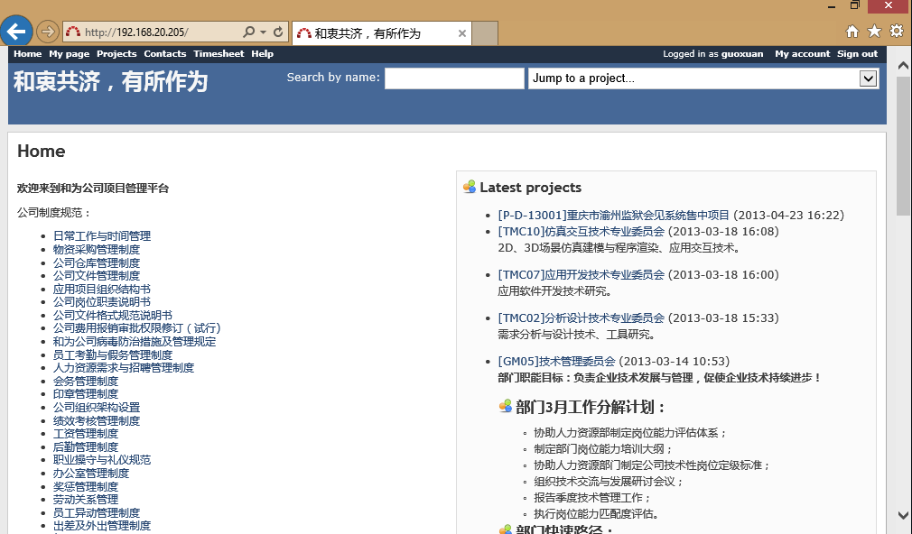
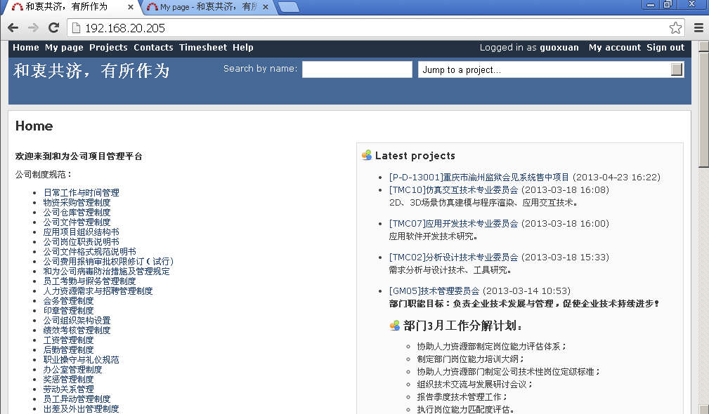
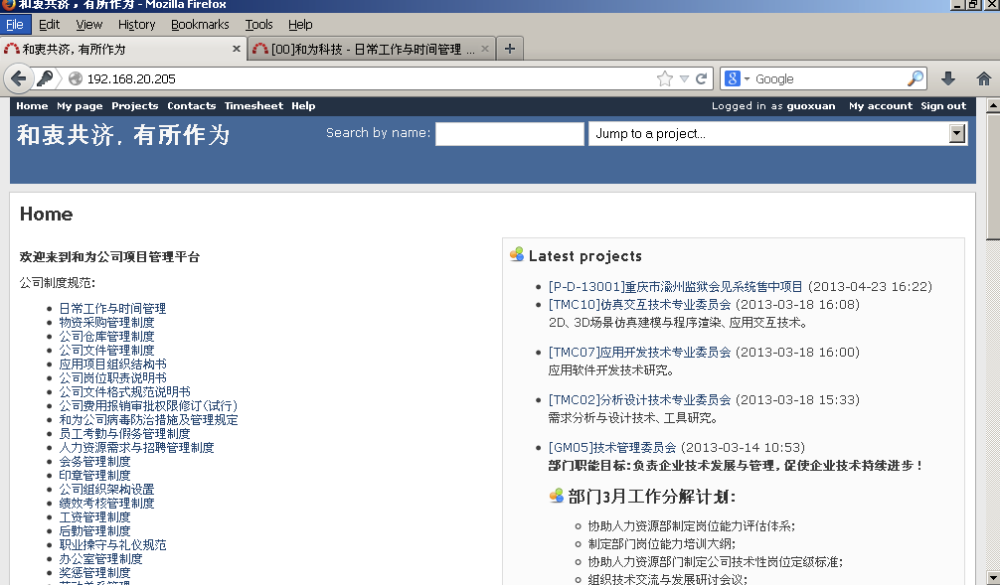
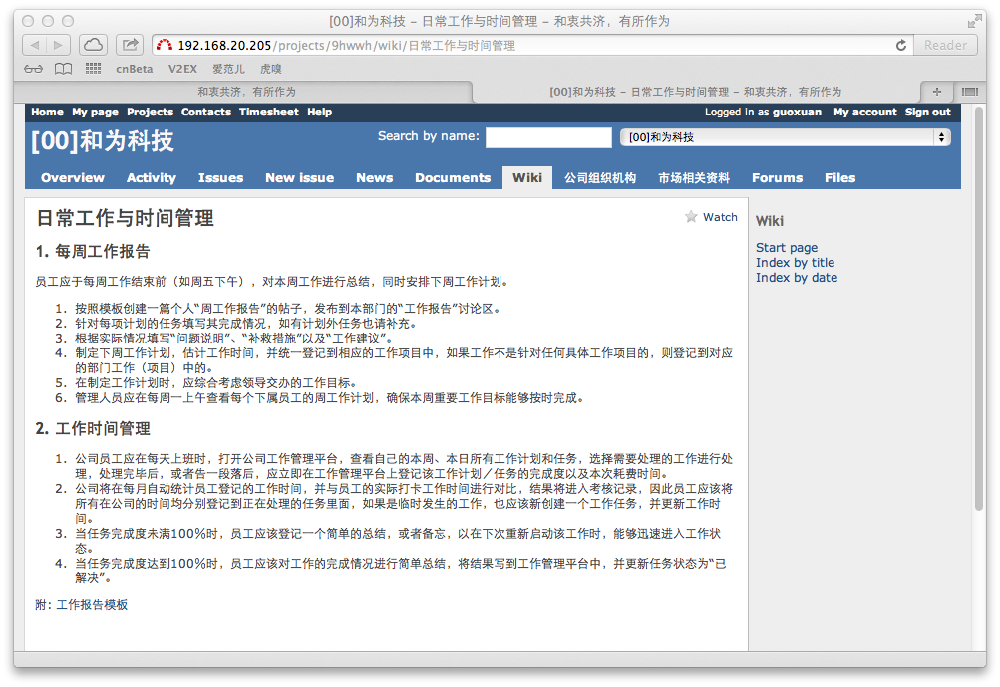
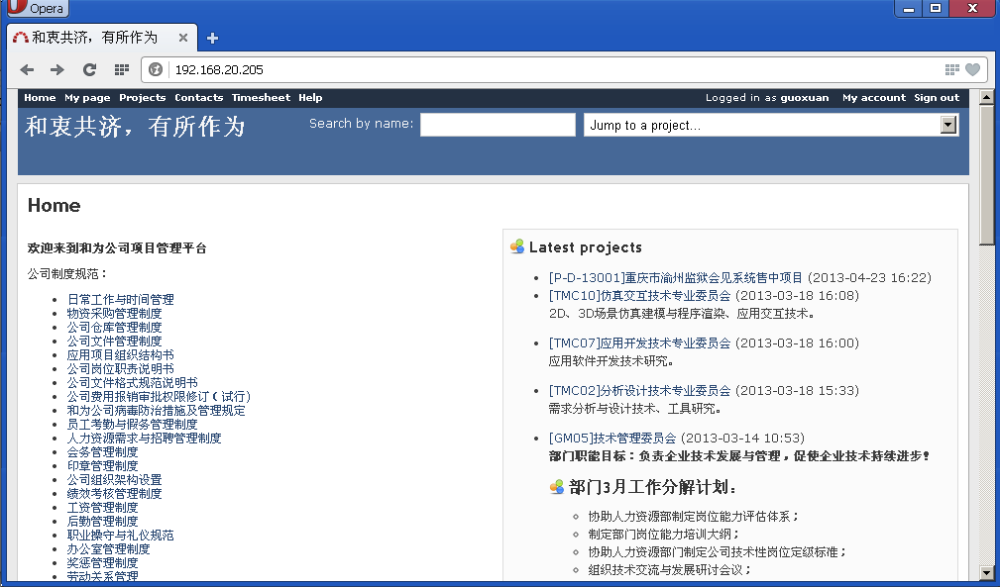
发现1
- 菜单栏默认都隐藏，除了firefox(可以手动隐藏)，而chrome在windows平台下无菜单栏
- 都默认支持多标签, safari在只有一个标签时隐藏标签页，且标签栏在地址栏下方
- 书签栏都可显示/隐藏
- 地址栏和搜索栏合并，除了firefox，firefox也支持在地址栏搜索，但是为什么要保留独立的搜索栏?
所有以上浏览器都支持一个最简UI: 由标签页，地址栏和内容显示区构成，而IE11甚至把地址栏和标签栏在同一行显示
发现2
- 刷新和暂停按钮合并，只占一个位置。Chrome/Opera有单独占位，IE/Firefox/Safari放在地址栏
- 后退/前进都放在地址栏左侧, Firefox只在可用时出现前进按钮，而后退不可用时是禁用状态。这是一个好的设计吗？
-
后退/前进按钮可以访问该标签页的历史记录
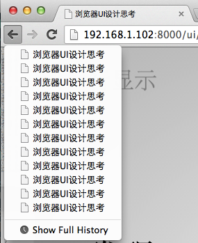
Chrome的进化史: Chrome 1, 2008
Chrome的进化史: Chrome 30, 2013
IE的进化史：IE 6, 2001
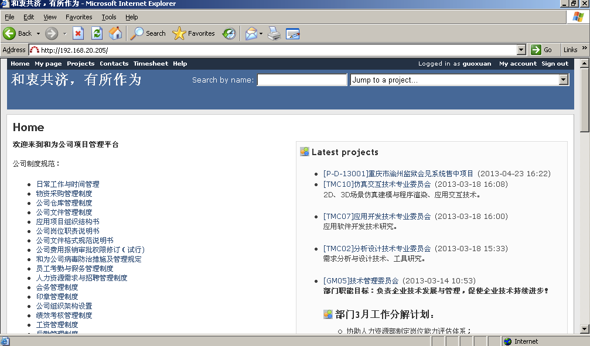
IE的进化史：IE 8, 2009
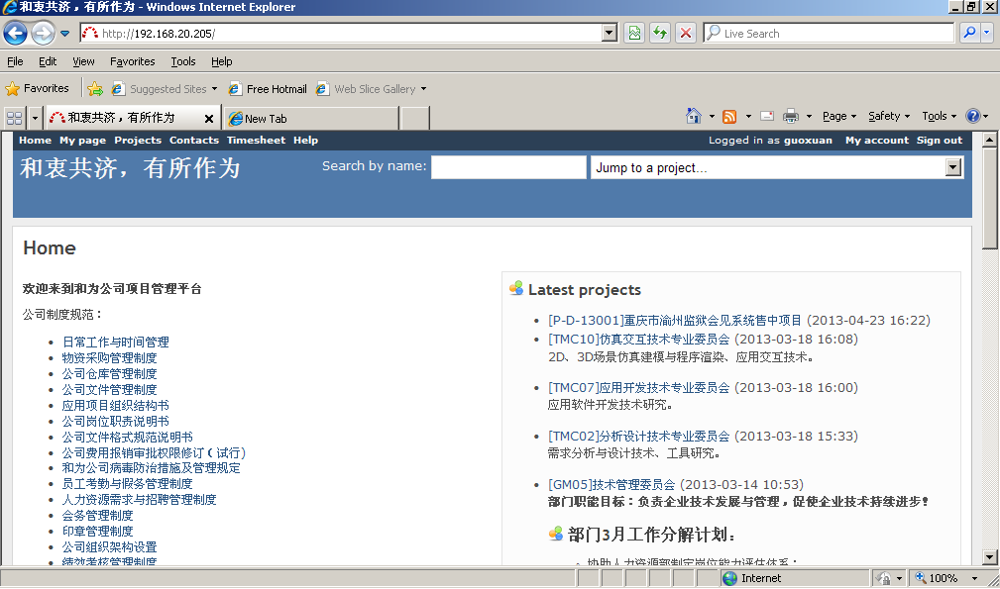
IE的进化史：IE 11, 2013
IE的进化史：IE 11 Modern UI, 2013
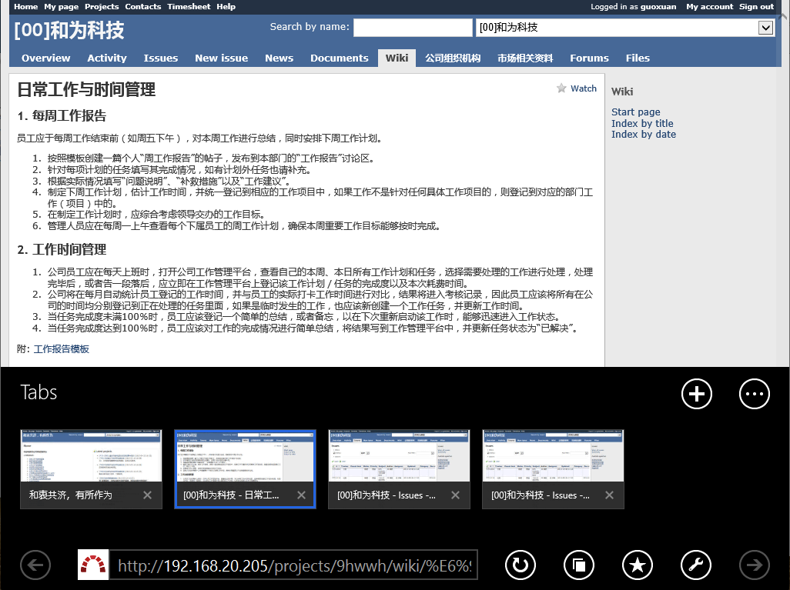
方案2: Chrome/Firefox收藏功能实现
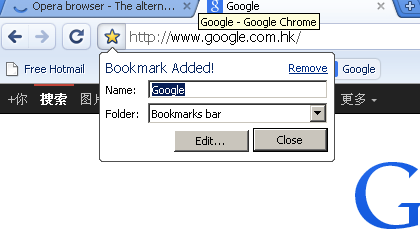
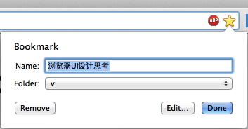
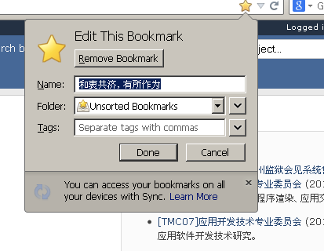
移动设备浏览器的局限
- 屏幕小，需要把更多的屏幕空间留给内容区域，功能区域可适当隐藏
- 触屏点击没有鼠标点击精确率高，需要把功能按钮分散，采用手势操作
问题
- 功能区在隐藏/显示切换时，怎么做才能更自然
- 手势操作有学习成本
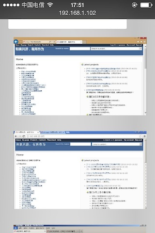
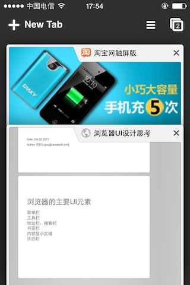
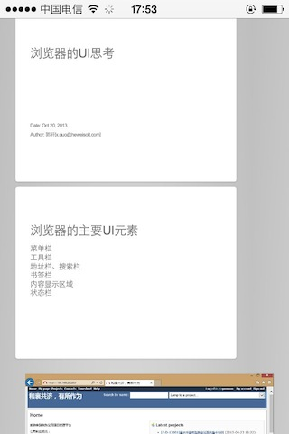